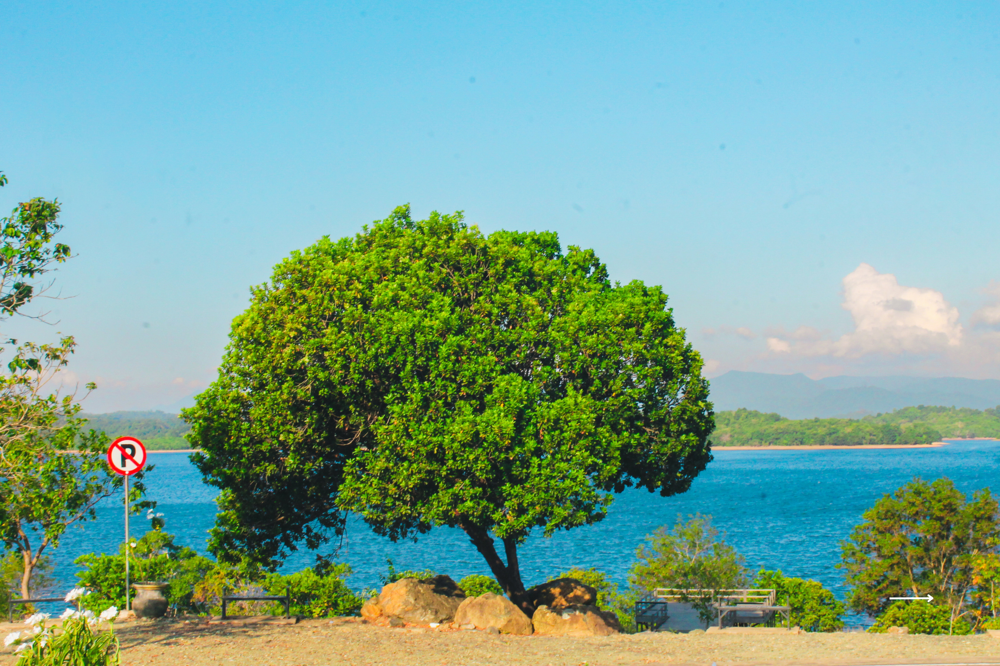
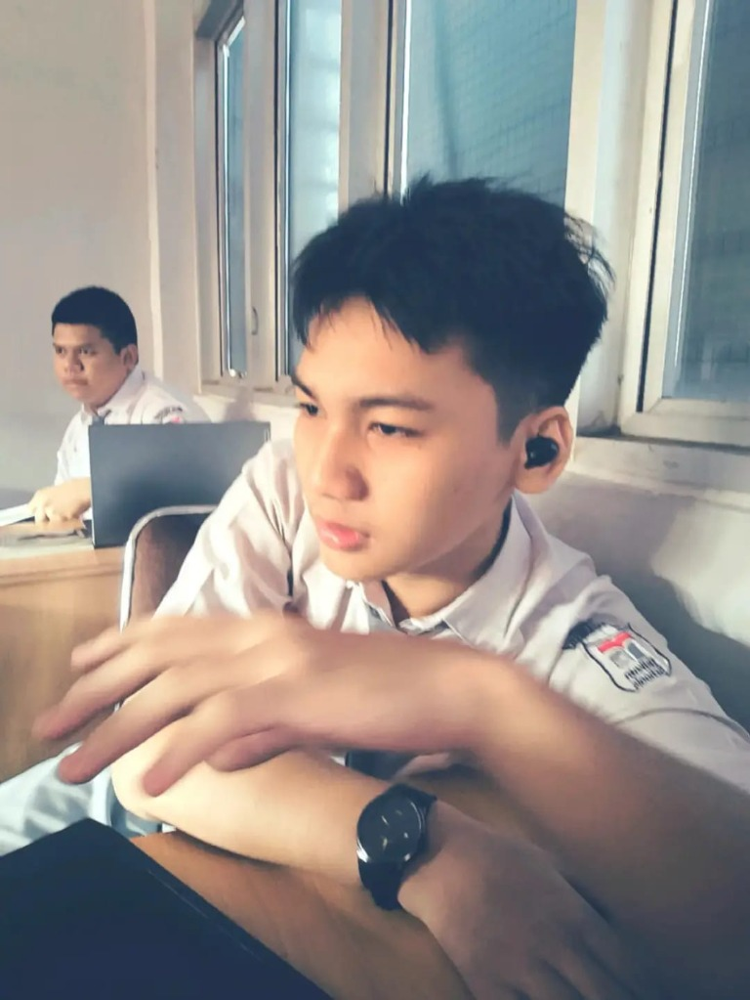

Fotografi
Mengabadikan momen dan melihat cerita dari sudut pandang yang berbeda.
Minat lainnya: desain grafis dan pengembangan game.

Website ini akan menampilkan project dan kontribusi saya dalam bidang IT & Teknologi

Halo, saya Muhamad Fajar Ananda Pratama, seorang siswa IT di SMK Telkom Banjarbaru yang memiliki ketertarikan besar terhadap dunia teknologi dan pengembangan digital.
Saya senang mengeksplorasi berbagai hal, mulai dari pemrograman, pengembangan website, hingga desain digital. Bagi saya, setiap proyek merupakan kesempatan untuk mempelajari sesuatu yang baru dan mengembangkan kemampuan.
Saya terus mengembangkan kemampuan di berbagai bidang teknologi, khususnya:
Ketertarikan saya tidak terbatas pada pemrograman. Saya juga memiliki minat dalam fotografi, desain grafis, dan dunia kreatif digital.
Melalui Jarrs Studio, saya mengeksplorasi fotografi dan pengembangan produk digital. Saya juga tertarik menciptakan pengalaman interaktif melalui pengembangan game.
Saya percaya bahwa kreativitas dan teknologi dapat berjalan berdampingan untuk menghasilkan sesuatu yang bermakna.
Saya percaya bahwa kemampuan tidak terbentuk hanya dari teori, melainkan melalui proses mencoba, mengalami kegagalan, dan terus memperbaiki diri.
Saya ingin terus mengembangkan kemampuan di bidang teknologi, menghasilkan karya yang bermanfaat, serta membangun sesuatu yang memiliki identitas dan nilai tersendiri.
Bagi saya, setiap ide memiliki potensi untuk diwujudkan. Yang dibutuhkan hanyalah keberanian untuk memulainya.
Di luar dunia teknologi
Mengabadikan momen dan melihat cerita dari sudut pandang yang berbeda.
Minat lainnya: desain grafis dan pengembangan game.


Poster bertema demokrasi dengan judul “Vive la Démocratie” (Hidup Demokrasi). Perpaduan warna merah dan ilustrasi keadilan menggambarkan pentingnya nilai demokrasi.
Sedang dan pernah belajar ditempat berikut
Pernah bekerja dan sedang bekerja ditempat berikut: